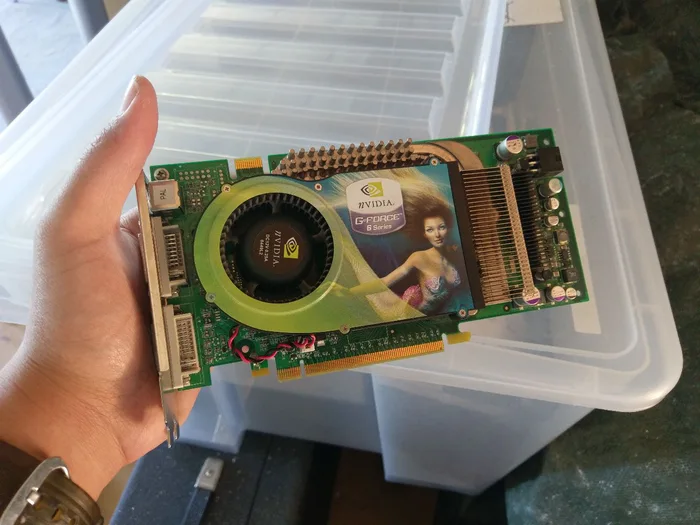
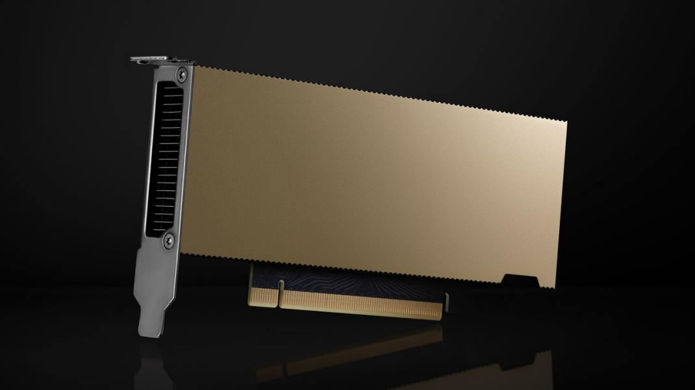
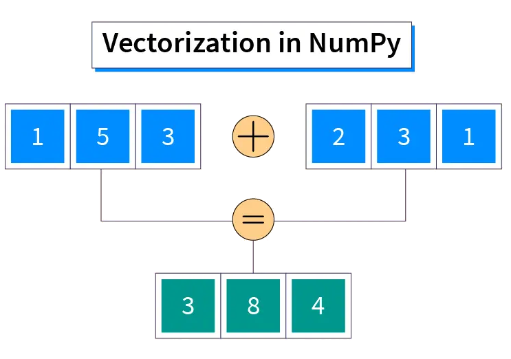
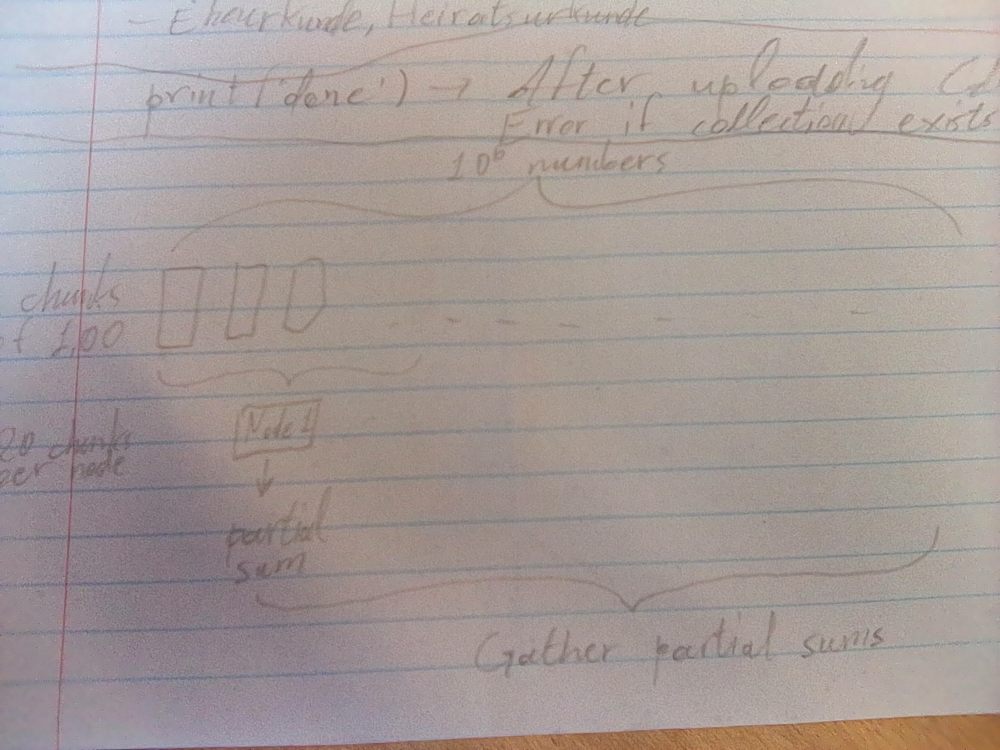
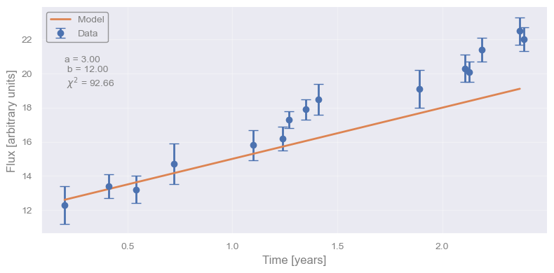
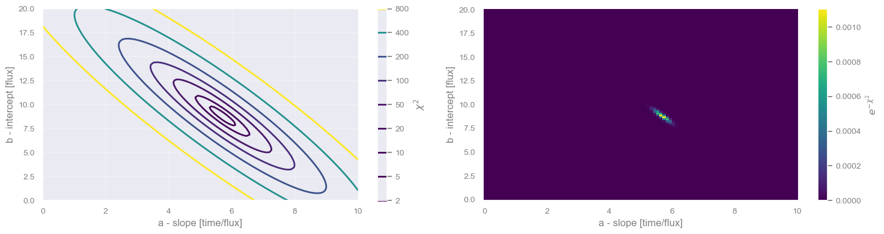
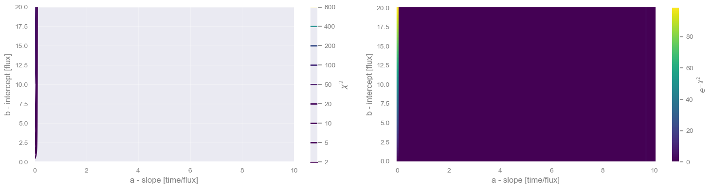

Optimizing code using Graphics Processing Units
The content presented in this notebook is the original work of the authors, unless specified otherwise. Any publicly available material incorporated is properly credited to its respective sources. All references to published papers, datasets, and software tools are duly acknowledged. The original content of this notebook is licensed under the GNU General Public License v3.0 (GNU GPLv3).
Introduction#
This notebook presents GPU parallelization, a coding framework/paradigm that can be used to dramatically speed up scientific computations.
Graphics Processing Units (GPUs) are massively parallel hardware devices, historically used for rendering graphics. These devices are capable of perfoming an incredible amount of computations in real time, leading to the realistic graphics we routinely see in video games nowadays. However, the same computational power can be harnessed to perform scientific computations. This has led, somewhat ironically, to the development of powerful GPUs without a port to connect a monitor to.
 |
 |
|---|---|
A GPU from 1999 - notice the gaming roots (original image) |
One of the latest General Purpose GPUs (an Nvidia L4 Tensor Core). Notice the lack of a monitor port. |
The power of GPUs is ‘’raw’’, which means that the tremendous speed up they can offer will not necessarily occur for any type of computations. A necessary ‘’code analysis’’ step needs to be taken first. Specifically, quoting from Barsdell et al. (2010):
Algorithms with well-defined memory access patterns and high arithmetic intensity stand to receive the greatest performance boost from massively parallel architectures.
In simpler words, if your code needs to do the same ‘’dum’’, mundane, repetitive task multiple times (the more the better), then GPUs could be very helpful. This is in contrast to, quoting from the same paper:
[Algorithms] that involve a significant amount of decision-making may struggle to take advantage of the available processing power.
Have you heard of “vectorization”?#
You might have heard of this term when working with some python libraries. Let’s assume we want to multiply each number in an array with a fixed number (this could be another simple operation, like dividing, adding, subtracting, taking the square or some other power, a sine or cosine, etc).
The simplest (sequential) programming way to achieve this would be by writing a loop that goes over each element in the array and performs the required operation. Vectorization consists in rewriting the loop in such a way as to process the elements of the array in parallel. For example, if the array is of size 500, we could use 5 threads working at the same time, each processing 100 elements, with the total computation being roughly 5 times faster. Obviously, the more threads available the faster the computation. For example, if there is one thread per array element we could speed this up by a factor of 500.
The name “vectorization” comes from an analogy with doing operations between vectors, for example, the case of multiplying an array, or vector, by a single number, or scalar, is analogous to (but, importantly, not the same) defining a new vector of equal size to the array with all its elements set to the same scalar value and then multiplying the two vectors element-by-element simultaneously.
{kind=link}

Examples of good GPU use cases#
Here is a tentative list of problems/algorithms that are efficiently parallelizable:
Ray shooting
N-body calculations
Neural networks
On the other hand, a bad/not optimal GPU algorithm would be one that requires constant communication between threads/kernels, or does not have a well-defined memory access pattern (we will see this in more detail). add image of accessing memory here.
Managing memory#
The last point raises an important question related to GPUs: memory management. Lets imagine the following example of calculating the mean of 1,000,000 values. We can break the problem into 2 steps:
Define 1,000 threads that will work in parallel each tasked with adding 1,000 numbers (in a loop).
Wait for all partial sums to be computed.
Add the computed 1,000 partial sums in a loop to obtain the final sum.
Divide by 1,000,000 to get the mean (this can also happen in each thread to avoid very large numbers).
Using parallel CPUs: Imagine that we want to distribute this task to 1,000 CPUs, most likely available in several computing nodes of a computing cluster. To make things a bit more clear, let’s assume 50 nodes of 20 CPUs each. Each CPU will run one loop and provide a partial sum, but in order to do so it must have access to the particular chunk of 1,000 numbers it needs to add. Because our CPUs are physically located across different machines, we need to divide the inital 1,000,000 numbers into chunks of memory, each containing a set of 1,000 numbers, and transfer them to each node accordingly. The first 20 chunks will go to the first node, the next 20 to the second, etc. Once each CPU completes their task of calculating a partial sum, which is just a number, the resulting 1,000 partial sums will need to be gathered to a single node for a CPU to take over the task of summing them up. This is how MPI works. add image/sketch explaining this
{kind=link}

Using a GPU: GPUs are separate hardware devices (think of them as a computing node within your computer) that have mutliple threads available, usually thousands. The GPU threads have some limitations compared to CPUs, but let’s not digress here, just remember that they are a bit ‘dummer’ and can handle simpler tasks. GPUs have their own memory independently from the RAM of the computer, just as a separate node would have. Hence, similarly to the CPU case above, we need to transfer the 1,000,000 numbers to GPU memory and then transfer the final result back to the CPU so that we can further process it, save it, make a plot, etc. The important difference here is that all memory will be visible to all the GPU threads, therefore, we have to instruct each thread which chunk of memory to work on.
A simple \(\chi^2\)#
One such ‘’ridiculously parallelizable’’ problem is the computation of a \(\chi^2\) metric: $\(\Large \chi^2 = \sum_{i=0}^{N} \frac{(d_i - \mathcal{M}_i)^2}{\sigma_i^2}\)\( where \)d\( is a measurement, \)\sigma\( its associated uncertainty, and \)\mathcal{M}\( a model prediction. The index \)i$ runs through a collection of such measurements that have a logical association, for example, a time-series or an image.
Below we show an example of fitting a straight line to some time-series/light curve data. The model is: $\( \mathcal{M}(t|\alpha,\beta) = \alpha x + \beta\)\( where \)\alpha\( and \)\beta\( are the free parameters - in this case, the slope and intercept of a straight line. Given some values of the free parameters, we can calculate the \)\chi^2$.
import numpy as np
import pandas as pd
import matplotlib.pyplot as plt
import seaborn as sns
# Set up a fancy plot style (you can comment it out without consequences)
import sys; sys.path.append('../src'); import plot_style
### First, we define the light curve data as a list of observations (time, flux, error)
measurements = np.array([
[0.20, 12.3, 1.1],
[0.41, 13.4, 0.7],
[0.54, 13.2, 0.8],
[0.72, 14.7, 1.2],
[1.10, 15.8, 0.9],
[1.24, 16.2, 0.7],
[1.27, 17.3, 0.5],
[1.35, 17.9, 0.6],
[1.41, 18.5, 0.9],
[1.89, 19.1, 1.1],
[2.11, 20.3, 0.8],
[2.13, 20.1, 0.6],
[2.19, 21.4, 0.7],
[2.39, 22.0, 0.7],
[2.37, 22.5, 0.8]
])
t = measurements[:,0] # time in units of years
f = measurements[:,1] # flux in arbitrary units
e = 1*measurements[:,2] # error in the same units as flux
### Second, we obtain the model.
### In this case it is just a straight line with 2 free parameters, which we set to some random values.
### We evaluate the model at the (time) location of each data point.
def my_model(x,alpha,beta):
y = alpha*x + beta
return y
a = 3 # in units of flux/time
b = 12 # in units of flux
model = [ my_model(x,a,b) for x in t ]
### Third, we compare the model to the data by calculating the corresponding chi^2
def chi2_cpu(d,e,m):
chi2 = 0.0
for i in range(0,len(d)):
chi2_term = (d[i]-m[i])/e[i]
chi2 = chi2 + np.power(chi2_term,2)
return chi2
chi2 = chi2_cpu(f,e,model)
### Finally, let's plot the data, our model, and its chi^2 value
data_plot = plt.errorbar(t, f, yerr=e, fmt='o', capsize=5, label="Data")
tt = np.linspace(t[0],t[-1],50) # some t values on which to calculate the model, just for plotting purposes
model = [my_model(t,a,b) for t in tt]
model_plot = plt.plot(tt,model,label="Model")
# Cosmetics (labels, legend, etc)
my_text = "a = %.2f \n b = %.2f \n $\chi^2$ = %.2f" % (a,b,chi2)
plt.text(0.2,20, my_text, horizontalalignment='left', verticalalignment='center')
plt.legend()
plt.xlabel('Time [years]')
plt.ylabel('Flux [arbitrary units]')
plt.show()

Brute force parameter estimation#
How do we find the best-fit (lowest \(\chi^2\)) a,b parameters? Or how do we explore the entire a,b parameter space and get confidence intervals on a,b ?
### First we define a grid of a,b to explore
# We need to ensure that our ranges are broad enough
min_a = 0
max_a = 10
N_a = 100 # number of grid points
a_grid = np.linspace(min_a,max_a,N_a)
min_b = 0
max_b = 20
N_b = 100 # number of grid points
b_grid = np.linspace(min_b,max_b,N_b)
# This results in a total of N_a x N_b combinations
print('Likelihood calculations: %d' % (N_a*N_b) )
### Second, calculate the chi^2 and likelihood for the entire 2D grid of a,b
chi2_surf = np.empty([N_a,N_b])
like_surf = np.empty([N_a,N_b])
for i in range(0,len(a_grid)):
for j in range(0,len(b_grid)):
model = [ my_model(x,a_grid[i],b_grid[j]) for x in t ]
chi2 = chi2_cpu(f,e,model)
like = np.exp(-chi2)
chi2_surf[i][j] = chi2
like_surf[i][j] = like
### Finally, plot the chi^2 and likelihood surfaces as a function of a,b
fig, axs = plt.subplots(1,2)
#fig.set_figheight(9)
fig.set_figwidth(15)
#im = axs[0].pcolor(a_grid,b_grid,chi2_surf,cmap='viridis')
im = axs[0].contour(a_grid,b_grid,chi2_surf,levels=[2,5,10,20,50,100,200,400,800],cmap="viridis")
fig.colorbar(im,ax=axs[0],label=r'$\chi^2$')
axs[0].set_ylabel('b - intercept [flux]')
axs[0].set_xlabel('a - slope [time/flux]')
im = axs[1].pcolor(a_grid,b_grid,like_surf,cmap='viridis')
fig.colorbar(im,ax=axs[1],label=r'$e^{-\chi^2}$')
axs[1].set_ylabel('b - intercept [flux]')
axs[1].set_xlabel('a - slope [time/flux]')
plt.show()
# Repeat by increasing the data error bars
Likelihood calculations: 10000

Optimizing the code#
If we increase the data size, or the grid size (parameter space to explore), then the computations take longer and longer.
What is the smallest independent unit of code that can run?
Bring the model computation in the chi^2 loop (make each thread work as much as possible)
# Show the code here
Converting to a GPU kernel#
import os
os.environ['NUMBAPRO_LIBDEVICE'] = "/anaconda3/pkgs/cuda-nvcc-12.3.52-0/nvvm/libdevice"
os.environ['NUMBAPRO_NVVM'] = "/anaconda3/pkgs/cuda-nvcc-12.3.52-0/nvvm/lib64/libnvvm.so"
import math
import numpy as np
from numba import cuda
@cuda.jit
def chi2_gpu(k_a,k_b,k_chi2,k_like,N_data,N_a):
k_t = cuda.const.array_like(t)
k_f = cuda.const.array_like(f)
k_e = cuda.const.array_like(e)
id_x,id_y = cuda.grid(2)
id_out = id_x*N_a + id_y
a_val = k_a[id_x]
b_val = k_b[id_y]
chi2_val = 0.0
for i in range(0,N_data):
model_val = a_val*k_t[i] + b_val
chi2_term = (k_f[i]-model_val)/k_e[i]
chi2_val = chi2_val + math.pow(chi2_term,2)
#chi2_val = chi2_val + a_val
chi2_val = cuda.grid(1)
k_chi2[id_out] = chi2_val
k_like[id_out] = math.exp(-chi2_val)
# Move input data to the device
d_a = cuda.to_device(a_grid)
d_b = cuda.to_device(b_grid)
# Create output data on the device
d_chi2 = cuda.device_array(N_a*N_b, dtype=np.float64, stream=None)
d_like = cuda.device_array(N_a*N_b, dtype=np.float64, stream=None)
# Launch the kernels
blocks_per_grid = 100
threads_per_block = 100
chi2_gpu[blocks_per_grid, threads_per_block](d_a,d_b,d_chi2,d_like,len(f),N_a)
# Wait for all threads to complete
cuda.synchronize()
# Copy the output array back to the host system
chi2_gpu = d_chi2.copy_to_host()
chi2_surf_gpu = chi2_gpu.reshape(N_a,N_b)
like_gpu = d_like.copy_to_host()
like_surf_gpu = like_gpu.reshape(N_a,N_b)
print(chi2_surf_gpu.shape)
print(chi2_surf_gpu)
### Finally, plot the chi^2 and likelihood surfaces as a function of a,b
fig, axs = plt.subplots(1,2)
#fig.set_figheight(9)
fig.set_figwidth(15)
#im = axs[0].pcolor(a_grid,b_grid,chi2_surf,cmap='viridis')
im = axs[0].contour(a_grid,b_grid,chi2_surf_gpu,levels=[2,5,10,20,50,100,200,400,800],cmap="viridis")
fig.colorbar(im,ax=axs[0],label=r'$\chi^2$')
axs[0].set_ylabel('b - intercept [flux]')
axs[0].set_xlabel('a - slope [time/flux]')
im = axs[1].pcolor(a_grid,b_grid,chi2_surf_gpu,cmap='viridis')
fig.colorbar(im,ax=axs[1],label=r'$e^{-\chi^2}$')
axs[1].set_ylabel('b - intercept [flux]')
axs[1].set_xlabel('a - slope [time/flux]')
plt.show()
/home/giorgos/anaconda3/lib/python3.9/site-packages/numba/cuda/dispatcher.py:536: NumbaPerformanceWarning: Grid size 100 will likely result in GPU under-utilization due to low occupancy.
warn(NumbaPerformanceWarning(msg))
(100, 100)
[[ 0. 0. 0. ... 0. 0. 0.]
[ 1. 0. 0. ... 0. 0. 0.]
[ 2. 0. 0. ... 0. 0. 0.]
...
[97. 0. 0. ... 0. 0. 0.]
[98. 0. 0. ... 0. 0. 0.]
[99. 0. 0. ... 0. 0. 0.]]

#EOF
#EOF